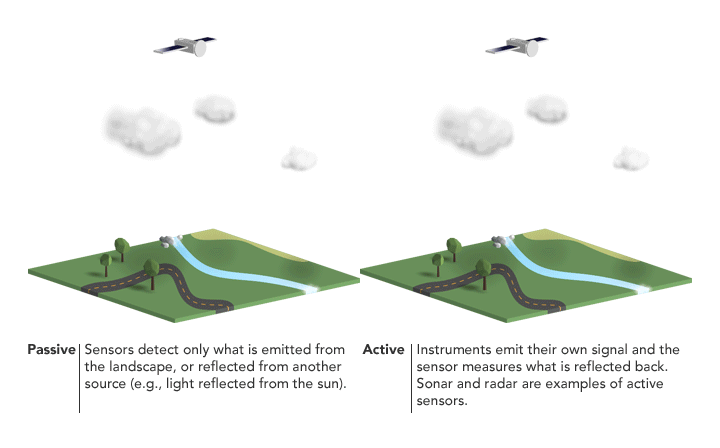
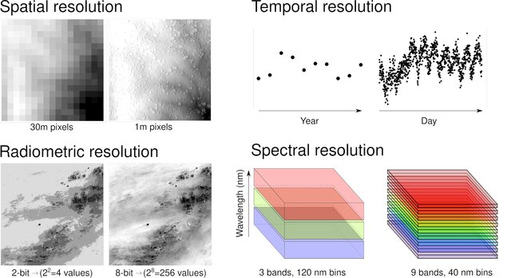

1.1 Summary
The first lecture of the module gave us an overview of remote sensing field, we discussed some advantages like huge data volumes, frequent updates, applications in policy-making, and the availability of free processing tools and some challenges such as the complexity of interpretation. Then we moved to more technical concepts that I’ll cover some here:
Sensors can be divided into two categories Passive and Active. Passive sensors rely on external energy sources (mostly sunlight) to detect reflected radiation. While cost-effective and capable of capturing detailed spectral information, passive systems are limited by daylight availability and atmospheric conditions like cloud cover. In contrast, active sensors generate their own energy, emitting radiation in the form of radar pulses or laser beams, they tend to be more complex and expensive to operate. Figure 1 summarizes how each category work visually.

Both sensor types rely on electromagnetic radiation (EMR) interactions with the Earth’s surface, the way they interact with surfaces depends on three key factors: the wavelength of the radiation, the material properties of the surface (such as water, vegetation, or concrete), and the physical condition of that surface (like its roughness or moisture content). These interactions result in varying amounts of energy being absorbed, transmitted through, or reflected by the surface, which ultimately determines what the sensors detect and the quality of the remote sensing data we obtain.
In addition, remote sensing data is defined by four key resolutions: spatial (pixel size), temporal (how often observations are made), radiometric (range of detectable values), and spectral (bandwidth sensitivity across the electromagnetic spectrum). These parameters determine the detail, frequency, sensitivity, and wavelength-specific information captured by the sensor (Figure 2).

It’s interesting how technical trade-offs—higher spatial detail reducing coverage frequency, or richer spectral data demanding more processing—shape policy applications. Cloud-free optical data suits urban planning, but disaster response needs timely action, not perfect weather, making radar’s cloud-penetrating role vital. These constraints highlight why sensor choice matters: precision versus speed can influence effective decision-making,
1.2 Applications
Building on my understanding of sensor types and resolution characteristics from this week’s lecture, I’ll explore how these technical specifications translate to real-world problem-solving within climate-related initiatives. Passive sensors, like those on Landsat 8, leverage sunlight to capture multispectral data across 11 spectral bands, enabling high spectral resolution (30m spatial resolution) that proves invaluable for long-term climate impact monitoring. For instance, Landsat’s thermal infrared band (Band 10) has been critical in tracking urban heat island effects with a 100m resolution, while its visible and near-infrared bands support vegetation health assessments through NDVI calculations (USGS, 2021). However, these capabilities come with inherent constraints - the 16-day revisit period (U.S. Geological Survey, 2023) and cloud sensitivity create temporal gaps that complicate real-time climate event monitoring.
This is where active sensor systems like GEDI (Global Ecosystem Dynamics Investigation) demonstrate their complementary value. Mounted on the ISS, GEDI’s lidar system penetrates vegetation canopies with laser pulses at 25m resolution, providing precise vertical structure data for carbon stock assessments that passive optical sensors cannot capture (Dubayah et al., 2020). The fusion of these datasets - combining Landsat’s spectral richness with GEDI’s structural measurements - exemplifies how modern climate science overcomes individual sensor limitations.
The technical trade-offs extend to temporal resolution considerations. While MODIS offers daily global coverage at 250m-1km resolution - ideal for tracking rapidly evolving phenomena like wildfire smoke plumes - its coarser spatial resolution limits detailed analysis. This has driven the development of hybrid solutions like ESA’s Sentinel-2 constellation, which provides 10-60m resolution with a 5-day revisit at mid-latitudes, significantly improving our ability to monitor deforestation fronts and glacier retreat (Drusch et al., 2012).
These applications underscore a main takeaway from our lecture: effective climate monitoring requires strategic sensor selection based on specific observational needs. The choice between high spectral resolution (Landsat), frequent temporal coverage (MODIS), or vertical profiling (GEDI) depends fundamentally on whether the research priority is long-term trend analysis, rapid event response, or 3D ecosystem modeling.
1.3 Reflections
The introductory lecture gave me a sense of what’s coming in the next few weeks, my initial thought was concern as many concepts seems complicated but the lecturer’s note that the field is “filled with jargon that often isn’t as complicated as it sounds” made me optimistic, I hope that I can say I agree with that statement by the end of this course!
While I’ve previously worked with remote sensing products like temperature and elevation datasets, I never fully understood the underlying processes. Documentations were often overwhelming and complicated. Now, with these fundamental concepts, I feel equipped to not just use but truly understand and potentially recreate these analyses myself.
The lecture’s simple yet profound questions—“Why is the sky blue?”, “Why does the moon have a black sky?”, “Why is the ocean blue?”— highlighted how basic physical principles shape both what we observe in nature and what sensors detect technically. Now, I use these questions to simplify my answers when people ask what I’m studying and how satellites work, bridging everyday sights with the science behind them.
1.4 References
Drusch, M., Del Bello, U., Carlier, S., Colin, O., Fernandez, V., Gascon, F., Hoersch, B., Isola, C., Laberinti, P., Martimort, P., Meygret, A., Spoto, F., Sy, O., Marchese, F., & Bargellini, P. (2012). Sentinel-2: ESA’s Optical High-Resolution Mission for GMES Operational Services. Remote Sensing of Environment, 120, 25–36. https://doi.org/10.1016/j.rse.2011.11.026
Dubayah, R., Blair, J. B., Goetz, S., Fatoyinbo, L., Hansen, M., Healey, S., Hofton, M., Hurtt, G., Kellner, J., Luthcke, S., Armston, J., Tang, H., Duncanson, L., Hancock, S., Jantz, P., Marselis, S., Patterson, P. L., Qi, W., & Silva, C. (2020). The Global Ecosystem Dynamics Investigation: High-resolution laser ranging of the Earth’s forests and topography. Science of Remote Sensing, 1, 100002-. https://doi.org/10.1016/j.srs.2020.100002
NASA. (n.d) MODIS. Available at: https://modis.gsfc.nasa.gov/data/
U.S. Geological Survey. (2023). Landsat 9 data users handbook (Version 1.0). U.S. Department of the Interior. https://www.usgs.gov/media/files/landsat-9-data-users-handbook
USGS. (2021). Landsat 8-9 Operational Land Imager (OLI) and Thermal Infrared Sensor (TIRS) Level-2 Science Products. Version 2.0. U.S. Geological Survey. https://www.usgs.gov/core-science-systems/nli/landsat/landsat-collection-2-level-2-science-products